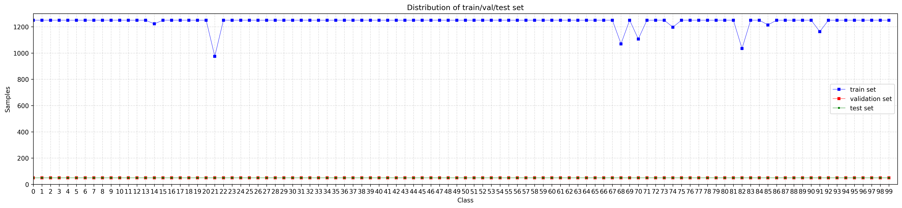
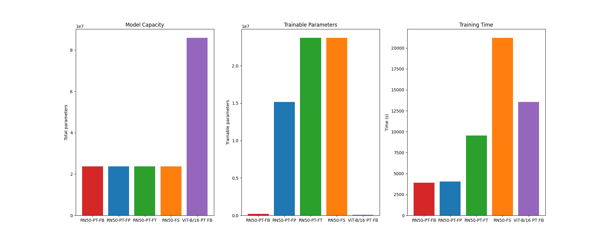
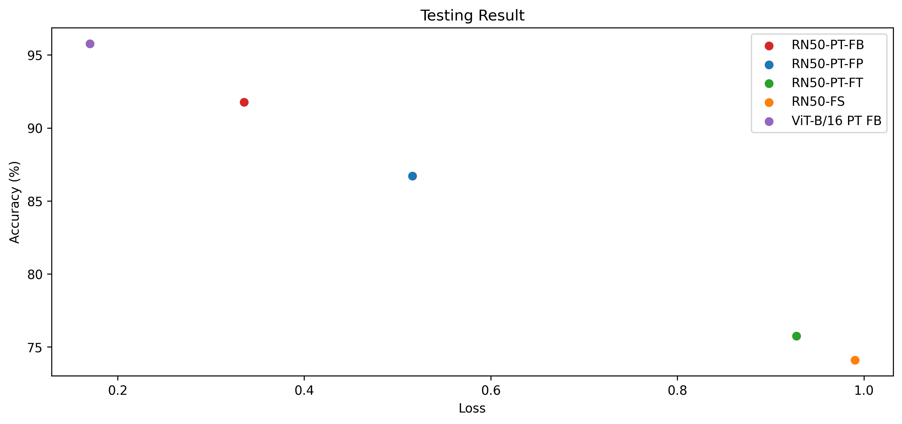
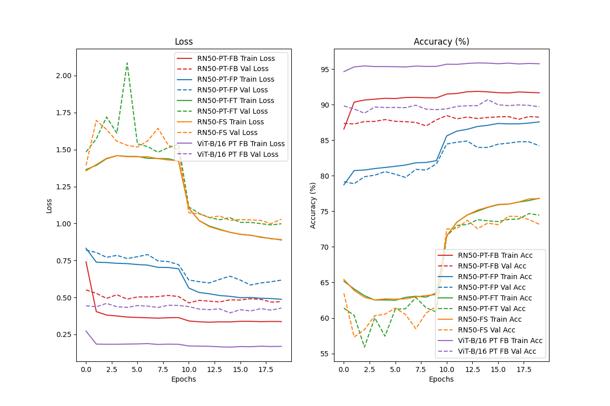
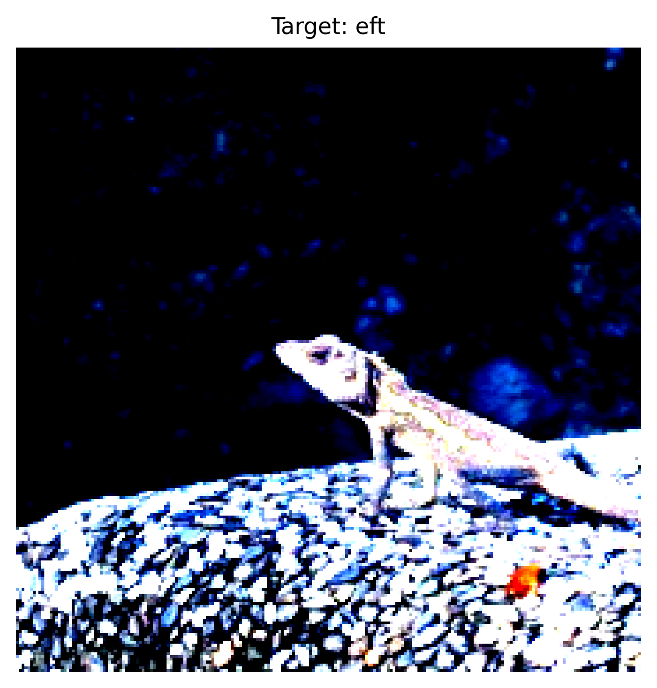
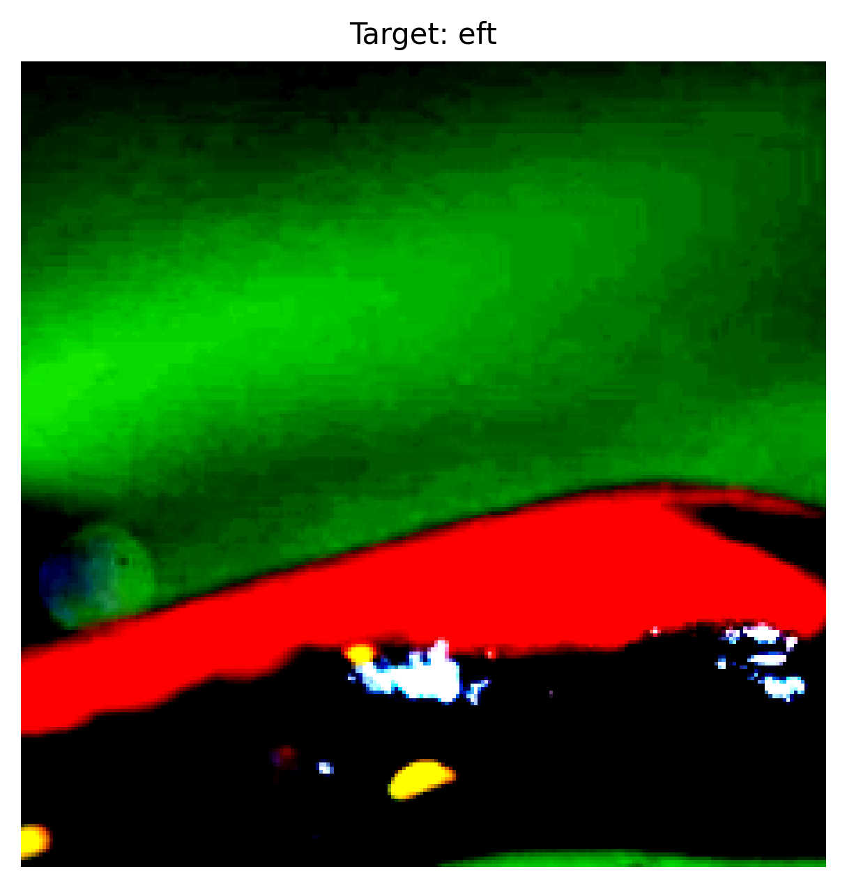

Train set: 123,982 images (~96% of total images).Validation set: 5,000 images (~4% of total images, fixed 50 images/class).Test set: 5,000 images (~4% of total images, fixed 50 images/class).Split ratio: Train : Validation : Test = 0.92 : 0.04 : 0.04
Data preprocessing and augmentation pipeline for training with PyTorch:
| Configuration | Train Set | Validation / Test Set |
|---|---|---|
| Input Image size | 224 × 224 | 224 × 224 |
| Batch Size | 32 | 32 |
| Shuffle & Workers | Shuffle = True, num_workers = 8 |
Shuffle = False, num_workers = 8 |
| Pin Memory & Drop Last | pin_memory = True, drop_last = True |
pin_memory = True, drop_last = False |
| Augmentation Pipeline |
|
|
The experiments are set up consistently to compare the two architecture families ResNet-50 (CNN) and ViT-B/16 (Transformer) across weight initialization modes and freeze levels based on the pretrained model:
PyTorch, GPU NVIDIA RTX 3500 Resnet50 (PyTorch), ViT-B/16 (PyTorch) (lr(bb) = 0.0005, lr(head)=0.001) step_size = 10, gamma = 0.2 20 (pre-trained)| Ver. | Model | Initialize weights | Training Strategy | Freeze Level Details |
|---|---|---|---|---|
| 1 | ResNet-50 | Pretrained | Freeze Full Backbone | Freeze the entire Backbone, only train the Linear Classifier Head. |
| 2 | ResNet-50 | Pretrained | Partial Freeze | Partial freeze (Freeze Layers 1-3 of ResNet or the first 6 Transformer Blocks of ViT). |
| 3 | ResNet-50 | Pretrained | Full Fine-tune | Unfreeze the entire network and fine-tune with a small Learning Rate. |
| 4 | ResNet-50 | Random Initialization | From-Scratch | Unfreeze 100% of parameters (Train from scratch). |
| 1 | ViT-B/16 | Pretrained | Freeze Full Backbone | Freeze the entire Backbone, only train the Linear Classifier Head. |
The test results are based on the model trained with the highest validation accuracy.
| Architecture | Configuration / Freeze Level | Trainable Params | Val Accuracy | Test Accuracy | Macro F1-Score | Time train/test (s) |
|---|---|---|---|---|---|---|
| ResNet-50 (CNN) |
From-scratch | 23,712,932 | 76.79% | 74.10% | 0.9900 | 21202.36 / 61.231 |
| Pretrained - Freeze Full Backbone | 204,900 | 91.87% | 91.76% | 0.3356 | 3912.80 / 22.14 | |
| Pretrained - Freeze Partial (Layer 1-3) | 15,169,636 | 87.57% | 86.70% | 0.5160 | 4032.17 / 21.40 | |
| Pretrained - Full Fine-tune | 23,712,932 | 76.83% | 75.74% | 0.9275 | 9529.75 / 21.551 | |
| ViT-B/16 (Transformer) |
Pretrained - Freeze Full Backbone | 76,900 | 95.86% | 95.86% | 0.1780 | 13570.00 / 350.65 |
Visual comparison of the performance of CNN and Transformer models on the Test/Validation set





ResNet50 with Freeze Full Backbone achieves the best performance among ResNet50 configurations, reaching 91.76% test accuracy and 0.9179 Macro F1-score. Partial fine-tuning, full fine-tuning, and training from scratch achieve progressively lower accuracy. ViT-B/16 outperforms all configurations, achieving 95.86% test accuracy and 0.95787 Macro F1-score.
ViT-B/16 has 85.88M parameters, approximately 3.62 times more than ResNet50 (23.71M). However, its frozen-backbone configuration trains only 76,900 parameters, compared with 204,900 for ResNet50. ViT-B/16 requires longer training (13,570s) and testing (350.65s), while ResNet50 Freeze Full Backbone requires only 3,912.8s and 22.14s, respectively.
ViT-B/16 achieves the lowest training loss (0.164) and validation loss (0.3954), with a 5.16 percentage-point accuracy gap. ResNet50 Freeze Full Backbone also demonstrates good generalization, with a smaller 3.41 percentage-point gap. In contrast, full fine-tuning and training from scratch show weaker validation performance, suggesting that pretrained features are particularly beneficial under the current experimental settings.
ViT-B/16 provides the highest classification performance, while ResNet50 Freeze Full Backbone offers a more computationally efficient alternative. The results highlight that using pretrained weights and selecting an appropriate fine-tuning strategy are important for achieving effective classification and generalization.